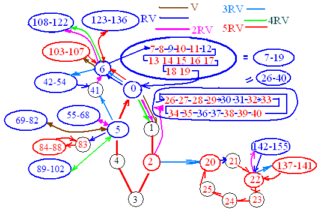

| We start with face zero as given in the applet at the bottom of the previous page. From face 0, there are 6 different V flexes possible: V RV RRV which we will abbreviate 2RV, 3RV, 4RV=2rV, and 5RV=rV. We have chosen the 6 different colors shown for these 6 different flexes. We have also chosen a black circle to have at least 2 singletons, a red circle to mean 1 singleton, and a blue circle means 0 singletons. 6 nodes that start and end at the same node will be called a 6 circle. 15 nodes that start and end at the same node is a 15 circle. A blue ellipse is a portion of a 15 circle while a red ellipse is a portion of a 6 circle. Note that the 15 circle, 0-6-7-...-17-18-19-0 has 4 blue circles and 11 red circles. Is that always the case? | |
|  | Using the applet on the previous
page that always starts with face 0, flex according to the color and see if
you agree with my modest beginning. How are we going to display all 100000
faces where anyone can flex to any predetermined face?
I have a program that numbers the nodes differently. I would like to
number the nodes in a more systematic way as shown here. Do you have any ideas?
I have shown all possible V-flexes for nodes |